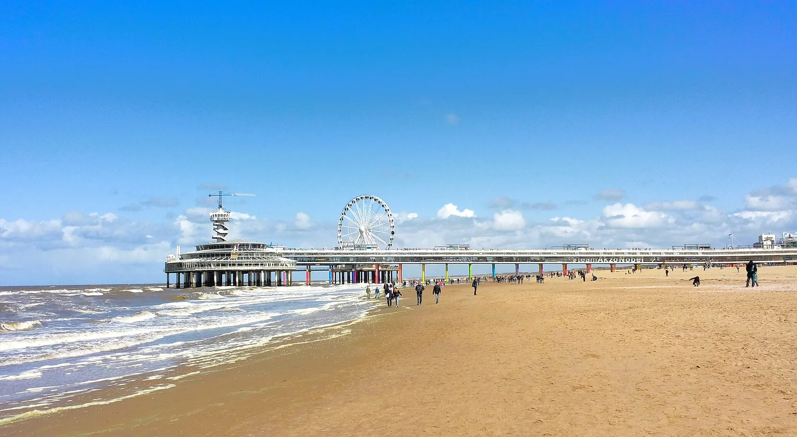

Scheveningen
La Haye, Pays-Bas · surf, kitesurf, baignade

Station balnéaire de La Haye, avec une jetée et des épis qui organisent les vagues. Le berceau du surf néerlandais.
- Lieu
- La Haye, Pays-Bas
- Niveau
- Débutant
- Activités
- surf, kitesurf, baignade
- Type d'eau
- Mer / océan
- Coordonnées
- 52.11, 4.27 (position approximative du secteur)
Dangers à connaître
- Courants près des épis.
- Port voisin : respecte les zones interdites.
Le conseil d'Ocean Buddy
Surfe près de la jetée par vent de sud-ouest, c’est souvent plus rangé.
Ouvrir dans Ocean Buddy Télécharger sur l'App Store
Source : Fiche Ocean Buddy · septembre 2026 · à vérifier localement.